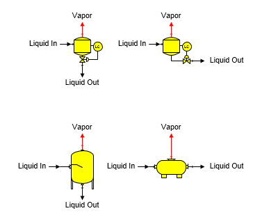

Flash Tank A flash tank station is used to cool a material flow stream by allowing water vapor to flash. Different flash tank shapes provided with Sugars are shown below.

General Features Sucrose crystals are not grown in a flash tank even if the output flow temperature and dry substance are suitable for crystallization; hence, the output flow may be supersaturated. Sucrose crystals (if any) in the input flow will remain the same by weight in the output flow. The value entered for either the vapor out pressure (or saturation temperature), or the liquid out temperature is used to control flashing in the flash tank. Alternately, pressure for the flash tank is provided by pressure feedback from another station in the model when neither of the temperatures is entered and the pressure feedback option is selected for the flash tank. The vapor flow out pressure will be set to atmospheric pressure (see Program Overview > User Interface) if the vapor out leaves the model (that is, it is not connected to another station) and it is a pressure feedback flow. Either the vapor out or the liquid out can be a required flow, but not both output flows. Sugars will calculate the liquid input flow rate if either output flow is required.